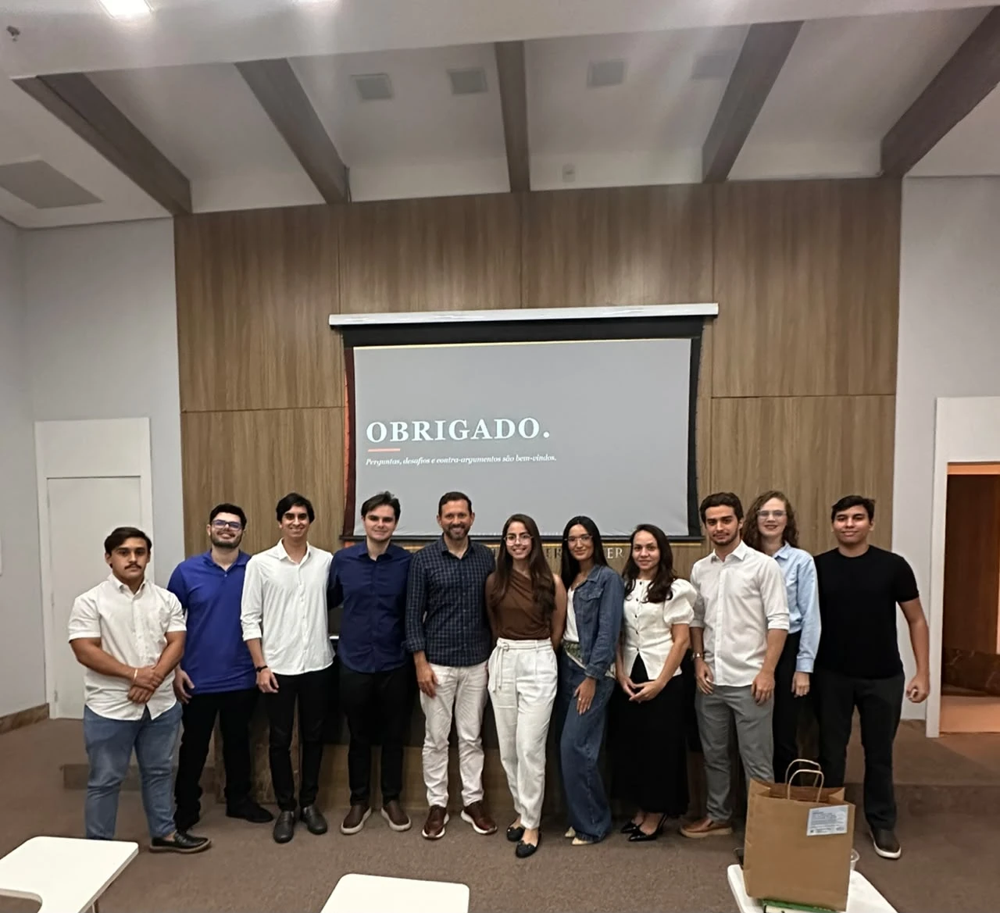

Experiência além da sala de aula
Encontros com profissionais, escritórios e empresas, além de atividades internas de formação e integração dos membros.
Expedientes Externos
Encontros nos quais profissionais e professores dialogam com os membros sobre temas de Direito Empresarial e Societário — por meio de exposições teóricas ou análise de casos concretos, seja com escritórios de advocacia ou visitas técnicas a empresas.
Escritórios de Advocacia

Resolução de conflitos na Junta Comercial: análise casuística da dissolução parcial de sociedades
Com Dr. André Santa Cruz e Dra. Amanda Mesquita — uma análise prática da dissolução parcial de sociedades, abordando a competência das Juntas Comerciais, o direito de retirada, a apuração de haveres do sócio retirante, o papel do DREI e os procedimentos de registro empresarial.

Acordo de Sócios
Com Prof. Marcelo Lauar — instrumentos e cláusulas centrais do acordo de sócios, com foco em startups e sociedades de capital fechado.

Estrutura de Governança das Sociedades Anônimas
Com Dr. Arthur Araújo, da LBA Advogados e Conselheiro da LEDS — órgãos das S.A., governança corporativa e o papel dos acordos de acionistas.

Noções introdutórias de Contabilidade
Com Anderson Dantas e Carlos Braga, da Braga e Dantas Advogados — contabilidade aplicada ao Direito Empresarial: balanço patrimonial, DRE, DFC, valuation e escrituração fiscal (ECD, ECF, EFD).

Apuração de Haveres: critérios científicos e standards de controle judicial
Palestra com Dr. Gabriel Martins de Araújo sobre os critérios técnicos e os parâmetros de controle judicial aplicados à apuração de haveres em dissoluções societárias.
Empresas | Visitas Técnicas

Hospital Memorial — estrutura societária e compliance
Convite do Dr. Hindenberg Dutra para conhecer um case junto à equipe do Hospital Memorial: organização societária, modelo de gestão e práticas de compliance voltadas à segurança jurídica e administrativa.

Gentil Negócios
Conversa com a liderança da Gentil Negócios sobre cultura organizacional, valores e como o direito estrutura decisões estratégicas no dia a dia da empresa.

Grupo Edificare — Bastidores da Energia
Com Gibran Lula, CEO do Grupo Edificare — "Como uma holding operacional otimiza resultados": estrutura societária, gestão de riscos e o papel jurídico na operação de uma holding no setor de energia.
Expedientes Internos
Encontros voltados ao aprofundamento acadêmico, capacitação e integração dos membros — nos quais os próprios integrantes da LEDS ministram aulas, apresentações e discussões sobre temas relevantes, estimulando o protagonismo acadêmico e a formação técnica dentro da liga.